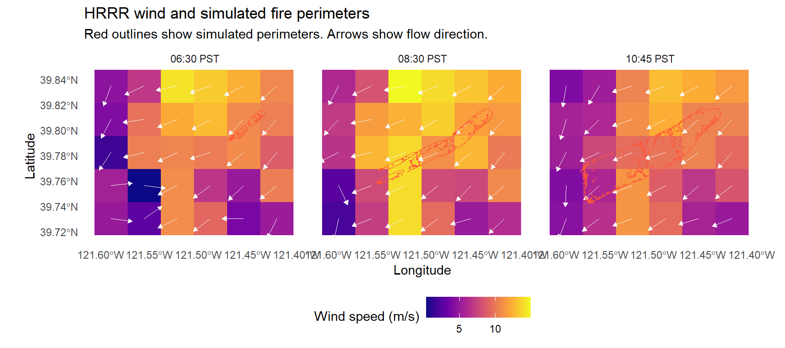

library(terra)
library(sf)
library(ggplot2)A Visualization for how different wind condition inputs affect wildfire simulations
Introduction
Wind is a key input in wildfire simulations, which influences both the direction and rate of fire spread. Maintain other inputs the same, different representation of wind can produce different simulated fire patterns. Visualizing these differences can help explain how sensitive a wildfire simulation is to its wind inputs.
This project uses the 2018 Camp Fire in California as a case study. The fire began on November 8, 2018, in Butte County, and its documented progression provides a reference for comparing simulations (NIST, 2021). The analysis focuses on a question: How does simulated fire spread change under different wind-input scenarios?
I compare three wind-input scenarios: a spatially uniform wind field based on average wind field from a single weather station, a High-Resolution Rapid Refresh (HRRR) wind field, and a fine wind field downscaled from HRRR. The analysis focuses on how closely the simulated burned area in each scenario matches the observed burned area of the 2018 Camp Fire in both size and location.
I expect different wind inputs to produce differences in both the shape and size of the simulated burned area. This project maps where the scenarios differ and how those differences affect their agreement with the observed fire.
Materials and methods
Data
Wind data. We used three types of wind data:
- Station observations. In situ wind measurements were recorded at the Jarbo Gap Remote Automated Weather Station (RAWS; station ID JBGC1). MesoWest station data
- HRRR model output. We used wind fields from NOAA’s High-Resolution Rapid Refresh (HRRR) model on a 3 km grid at 15-minute intervals. NOAA HRRR data archive
- Downscaled wind fields. We used a machine-learning model to generate wind fields on a 90 m grid.
Wildfire simulations. We used the Fire Area Simulator (FARSITE) to simulate wildfire spread. USDA Forest Service FARSITE documentation
Satellite-derived reference perimeter. We delineated a reference fire perimeter from Landsat 8 Operational Land Imager (OLI) Band 7 (shortwave infrared 2, SWIR2) reflectance imagery and used it to evaluate the simulated fire spread. USGS EarthExplorer
data_dir <- "C:/Users/zhang/Box/Course/GEO 511/GEO511_final_project/data"
wind_speed_unit <- "m/s"
hrrr_wind_dir <- file.path(data_dir, "0_wind", "HRRR", "HRRR_subhourly_20181108")
hrrr_fire_path <- file.path(data_dir, "1_fire", "HRRR_driven", "hrrr_1045.shp")
hrrr_wind_files <- list.files(
hrrr_wind_dir, pattern = "^[0-9]{8}_[0-9]{4}_PST_u10[.]tif$"
)
wind_paths <- function(id) {
setNames(file.path(hrrr_wind_dir, paste0(id, c("_PST_u10.tif", "_PST_v10.tif"))),
c("u", "v"))
}
wind_ids <- sort(sub("_PST_u10[.]tif$", "", hrrr_wind_files))
wind_ids <- wind_ids[vapply(wind_ids, function(id) all(file.exists(wind_paths(id))),
logical(1))]
hrrr_fire <- st_read(hrrr_fire_path, quiet = TRUE)
wind_reference <- rast(wind_paths(wind_ids[1])[["u"]])
map_crs <- st_crs(crs(wind_reference))
wind_year <- unique(substr(wind_ids, 1, 4))
fire_id <- sprintf("%s%02d%02d_%04d", wind_year, as.integer(hrrr_fire$Month),
as.integer(hrrr_fire$Day), as.integer(hrrr_fire$Hour))
matched_times <- intersect(wind_ids, fire_id)Results
plot_wind_fire <- function(times = c("20181108_0630", "20181108_0830", "20181108_1045"),
arrow_every = 1L, padding_m = 3500,
draw_arrows = TRUE) {
times <- sort(unique(times))
stopifnot(length(arrow_every) == 1L, is.finite(arrow_every), arrow_every >= 1,
arrow_every == as.integer(arrow_every), padding_m >= 0)
labels <- setNames(
paste0(substr(times, 10, 11), ":", substr(times, 12, 13), " PST"), times
)
keep <- fire_id %in% times
# Retain geometry only; all features at the requested time are displayed.
outlines <- st_sf(
panel = factor(unname(labels[fire_id[keep]]), levels = unname(labels)),
geometry = st_geometry(hrrr_fire)[keep]
)
outlines <- st_transform(outlines, map_crs)
box <- st_bbox(outlines)
latitude <- mean(c(box[["ymin"]], box[["ymax"]]))
longitude_scale <- cos(latitude * pi / 180)
pad_y <- padding_m / 111320
pad_x <- pad_y / longitude_scale
view <- ext(box[["xmin"]] - pad_x, box[["xmax"]] + pad_x,
box[["ymin"]] - pad_y, box[["ymax"]] + pad_y)
frames <- lapply(times, function(id) {
layers <- lapply(wind_paths(id), rast)
wind <- crop(do.call(c, unname(layers)), view)
names(wind) <- c("u", "v")
df <- as.data.frame(wind, xy = TRUE, cells = TRUE, na.rm = FALSE)
df$speed <- sqrt(df$u^2 + df$v^2)
df$panel <- factor(labels[[id]], levels = unname(labels))
rc <- rowColFromCell(wind, df$cell)
arrows <- df[rc[, 1] %% arrow_every == 1L %% arrow_every &
rc[, 2] %% arrow_every == 1L %% arrow_every &
is.finite(df$u) & is.finite(df$v), ]
magnitude <- sqrt(arrows$u^2 + arrows$v^2)
arrows <- arrows[magnitude > 0, ]
magnitude <- magnitude[magnitude > 0]
arrow_length <- 0.65 * arrow_every * min(res(wind) * c(longitude_scale, 1))
# Convert the eastward component to a longitude displacement.
# Arrow length is fixed. Colour conveys the wind speed.
arrows$xend <- arrows$x + arrow_length * arrows$u / (magnitude * longitude_scale)
arrows$yend <- arrows$y + arrow_length * arrows$v / magnitude
list(speed = df[is.finite(df$speed), c("x", "y", "speed", "panel")],
arrows = arrows)
})
speed <- do.call(rbind, lapply(frames, `[[`, "speed"))
arrows <- do.call(rbind, lapply(frames, `[[`, "arrows"))
legend <- if (is.null(wind_speed_unit)) "Wind speed" else
paste0("Wind speed (", wind_speed_unit, ")")
map <- ggplot() +
geom_raster(data = speed, aes(x, y, fill = speed)) +
scale_fill_viridis_c(name = legend, option = "C")
if (draw_arrows) {
map <- map +
geom_segment(data = arrows, aes(x, y, xend = xend, yend = yend),
colour = "#F7F7F7", linewidth = 0.28,
arrow = grid::arrow(length = grid::unit(1.4, "mm"), type = "closed"))
}
map +
geom_sf(data = outlines, fill = NA, colour = "#FF5638", linewidth = 0.32) +
facet_wrap(vars(panel), ncol = min(3L, length(times))) +
coord_sf(crs = map_crs, datum = map_crs, expand = FALSE,
xlim = c(xmin(view), xmax(view)), ylim = c(ymin(view), ymax(view))) +
labs(title = "HRRR wind and simulated fire perimeters",
subtitle = paste("Red outlines show simulated perimeters.",
if (draw_arrows) "Arrows show flow direction." else ""),
x = "Longitude", y = "Latitude") +
theme_minimal(base_size = 11) +
theme(panel.grid = element_blank(), legend.position = "bottom")
}
plot_wind_fire()
Conclusions
[~200 words]
Clear summary adequately describing the results and putting them in context. Discussion of further questions and ways to continue investigation.
References
All sources are cited in a consistent manner